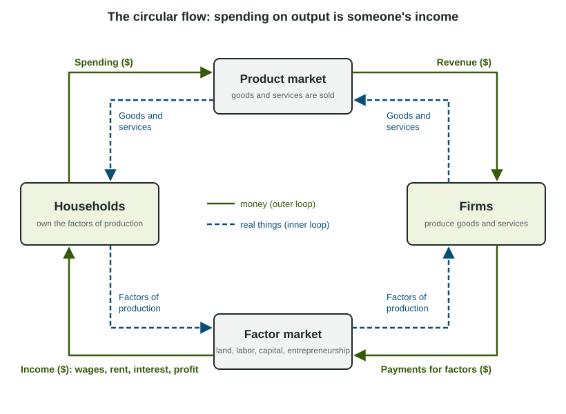

Spending is someone's income
When you buy a bike, the money does not disappear. The bike shop pays its workers, rents its building, pays interest on its loans and keeps what is left as profit. Every one of those payments goes to a household, and that household spends it again. The circular flow model draws this loop for a whole economy.

The model has two sectors and two markets (the figure):
- Households own the factors of production: land, labor, capital and entrepreneurship. They sell the use of those factors to firms in the factor market (also called the resource market) and receive income: wages for labor, rent for land and property, interest for capital, profit for entrepreneurship.
- Firms combine the factors to produce goods and services, which they sell to households in the product market. What households spend there is the firms' revenue.
A fuller version adds the government (it buys goods and services, collects taxes and pays benefits) and other countries (they buy our exports and sell us imports). The key idea does not change: total spending on final output equals total income, because every dollar one person spends is a dollar someone else earns.
What GDP measures
Gross domestic product (GDP) is the market value of all final goods and services produced within a country in a given year. Read it word by word:
- Market value: each good is counted at its price, so apples and haircuts can be added in dollars.
- Final goods and services: only what is bought by its final user. Intermediate goods, like the flour a bakery turns into bread, are left out, because their value is already inside the price of the final good.
- Produced: new production only. A used car was counted the year it was made.
- Within a country: inside its borders, whoever owns the factory. A car built in Ohio by a company based in Japan is part of United States GDP.
- In a given year: goods made this year and not yet sold are counted this year, as an addition to inventory.
Because spending, income and production are the same flow seen from different sides, GDP can be measured three ways: adding up spending on final goods (the expenditure approach), adding up the incomes earned (the income approach), or adding up the value added at each stage of production (sales minus the cost of intermediate goods). Done correctly, all three give the same number.
The expenditure approach: C + I + G + (X - M)
The AP® Macroeconomics exam uses the expenditure approach most:
| Part | What it is | Example |
|---|---|---|
| Consumption (C) | Household spending on goods and services | Groceries, a phone, a haircut |
| Investment (I) | New capital goods, new homes, changes in inventories | A factory machine, a newly built house |
| Government purchases (G) | Government spending on goods and services | A new road, a teacher's work |
| Net exports (X - M) | Exports minus imports | Wheat sold abroad minus phones bought from abroad |
Two words trip students up. Investment in GDP does not mean buying stocks; it means spending on new capital, new homes and added inventory. And imports are subtracted because they are already counted inside C, I and G when people buy them, yet they were produced in another country.
Worked example: GDP from a table.
Country X (invented data, billions of dollars): consumption 600, investment 150, government purchases 200, exports 80, imports 100, transfer payments 90.
Step 1. Leave out what is not production. Transfer payments (pensions and other benefit checks) buy nothing produced, so drop the 90.
Step 2. Find net exports. .
Step 3. Add.
The slips readers see: adding imports instead of subtracting them (1,130), and counting transfer payments (1,020).
What GDP leaves out
- Intermediate goods: counting the wheat, the flour and the bread counts the same production three times.
- Used goods: reselling a used car produces nothing new (the dealer's service in selling it is counted).
- Financial transactions: buying stocks or bonds moves ownership; it produces no good or service.
- Transfer payments: government payments such as pensions, for which nothing is produced in return. When the money is spent, that spending is counted as consumption.
Worked example: final goods and value added.
A farmer sells wheat to a mill for $50, the mill sells flour to a bakery for $120, and the bakery sells bread to shoppers for $300.
Final goods. Only the bread is a final good: the chain adds $300 to GDP.
Value added. Farmer ; mill ; bakery . Total : the same answer.
Adding every sale, , double counts.